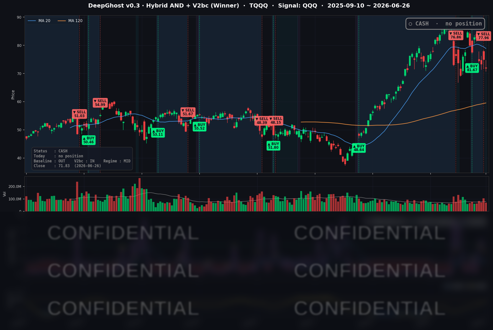

지수는 보합으로 평온했지만 반도체 차익실현이 빅테크를 끌어내렸습니다. 변동성은 커지면서 횡보장을 이어지고 있습니다.
📊 오늘의 매매 신호
| 항목 | 내용 |
|---|---|
| 오늘 할 일 | ✅ 아무것도 안 해도 됩니다 |
| 포지션 상태 | 💵 현금 보유 중 (OUT OF POSITION) |
| 현금 보유 기간 | 2026-06-25 ~ 2026-06-26 (2일) |
| TQQQ 종가 | $71.83 (-4.16%) |
어제(6/25) 시초가에 TQQQ를 정리해 현금으로 전환한 뒤, 새로운 매수·매도 신호 없이 관망을 이어갔습니다.
TQQQ 시그널 — OUT OF POSITION
현재 상태: 현금 보유 중 | 신규 매수·매도 신호 없음

지수만 보면 잔잔했지만 나스닥 레버리지(TQQQ)는 하루에 -4.16% 빠졌습니다. 만약 어제 청산하지 않고 들고 있었다면 이 하락을 고스란히 맞았을 자리입니다.
모델은 가격 모멘텀이 다시 살아났다는 확신이 설 때까지 무리해서 들어가지 않습니다. 지금은 시장 심리가 흔들리는 구간이라, 전략은 현금을 들고 다음 진입 기회를 기다리는 자세입니다. 심리가 안정되고 다시 추세가 잡히면 매수 신호가 나올 것입니다.
오늘 미국 시장 — 시황 요약
지수 마감
| 지수 | 종가 | 등락률 |
|---|---|---|
| S&P 500 | 7,354.02 | -0.05% |
| 나스닥 종합 | 25,297.62 | -0.24% |
| 다우존스 | 51,876.11 | -0.09% |
| 러셀 2000 | 3,010.08 | +0.07% |
겉으로 본 지수는 거의 보합이었습니다. S&P 500도, 나스닥도, 다우도 사실상 제자리 마감이었죠. 그런데 속을 들여다보면 시장은 갈라져 있었습니다. 빅테크와 반도체 비중이 큰 ETF(QQQ -1.38%, TQQQ -4.16%)는 눈에 띄게 빠진 반면, 소형주(러셀 2000)는 오히려 강보합이었습니다. 자금이 반도체에서 빠져나와 다른 곳으로 옮겨간 정황입니다. 평균만 보면 평온해 보이는 '평균의 함정'이 그대로 나타난 하루였습니다.
국채 금리 동향
| 만기 | 수익률 | 변화(직전 유효종가 대비) |
|---|---|---|
| 3개월 | 3.69% | -1.0bp |
| 5년 | 4.15% | -2.0bp |
| 10년 | 4.40% | -1.0bp |
| 30년 | 4.86% | +0.0bp |
장단기 금리차(10년−3개월)는 +71bp로 정상적인 우상향 곡선을 유지했습니다. 금리 역전 없이 건강한 모습입니다. 흥미로운 점은 금리가 오히려 우호적으로 움직였다는 것입니다. 유가가 급락하며 물가 기대가 식자 10년물 금리는 며칠 새 4.50%에서 4.40%로 약 10bp 내려왔습니다. 보통 금리가 내리면 기술주에 좋은데, 이날 테크가 빠진 것은 금리 탓이 아니라는 뜻입니다. 진짜 이유는 따로 있었습니다.
연준 발언 & 금리 패스
연준(의장 Kevin Warsh)은 6월 17일 회의에서 기준금리를 3.50%~3.75%로 동결하고, 올해(2026년) 인하 전망을 점도표에서 아예 빼면서 물가 안정을 최우선으로 강조했습니다. 인하는 2027~2028년으로 미뤄졌고, 인상 가능성까지 언급된 매파적 회의였습니다. 그 결과 시장은 연내 인하 기대를 사실상 거둬들였고, 단기 금리(3개월 3.69%)는 높은 수준에서 고착됐습니다. 이날 발표된 5월 PCE 물가도 예상을 크게 웃돌지 않아 추가 매파 충격은 제한적이었습니다.
오늘의 핵심 이슈
- 반도체 차익실현이 주도한 테크 약세. 마이크론의 깜짝 실적(6/24)으로 불붙었던 반도체 랠리가 이날 되돌림에 들어갔습니다. 퀄컴(QCOM) -7.57%, 마이크론(MU) -6.69%, 브로드컴(AVGO) -3.67% 등 칩 종목이 일제히 차익실현 매물을 맞았습니다. 지수는 보합이었지만 그 충격이 QQQ -1.38%, TQQQ -4.16%로 나타났습니다.
- 5월 PCE 물가 발표. 헤드라인 전년比 +4.1%, 근원 +3.4%로 예상에 부합~소폭 하회했습니다. 연준 목표를 여전히 크게 웃도는 '끈적한 물가'이지만, 예상을 크게 넘지는 않아 추가 매파 충격은 제한적이었습니다.
- AI 메모리 가격이 소비자 제품 가격으로 전이. 애플(맥·아이패드 20%+ 인상)과 마이크로소프트(엑스박스 콘솔 8/1부터 $100~150 인상)가 AI 데이터센터발 메모리 수요로 부품값이 2.5배 넘게 뛰었다며 제품 가격 인상을 발표했습니다. 이 가격결정력 기대가 오히려 MSFT +5.71%, AAPL +3.14% 강세로 이어졌습니다.
변동성 & 투자심리
- VIX(공포지수): 18.41 (전일 대비 -2.54%) — 전일 18.89에서 내려왔습니다. 지수가 보합이고 유가가 안정되며 변동성은 차분했습니다. 패닉 신호는 아닙니다.
- 공포·탐욕 지수(CNN): 25 — '공포' 구간. 시장의 상승 동력과 폭(주도주 참여)이 약해진 점이 반영됐습니다.
- 종합 분위기: 중립~신중. VIX(18.4)는 차분한데 공포·탐욕 지수(25)는 공포권으로, 두 지표가 엇갈립니다. 지수 표면(보합)과 내부(테크·주도주 약화)의 괴리가 심리지표에 그대로 드러난 셈입니다. '지수만 보면 안 되는' 하루였습니다.
매크로 & 원자재
- 유가: WTI $69.23 (-3.74%), Brent $71.99 (-4.34%)
- 금: $4,078.70 (+1.20%)
호르무즈 해협 통행 재개 정황으로 중동 공급 우려가 풀리며 유가가 급락했습니다. 반대로 금은 위험 회피·물가 헤지 수요가 몰리며 강세를 보였습니다. 유가 하락은 물가 기대를 식혀 장기 금리를 끌어내린 배경이기도 합니다.
주요 종목 동향
| 종목 | 종가 | 등락률 | 비고 |
|---|---|---|---|
| MSFT | 372.97 | +5.71% | 엑스박스 가격 인상 + AI 수혜, 이날 최강세 |
| NFLX | 73.81 | +4.10% | 플랫폼 강세 그룹 |
| AAPL | 283.78 | +3.14% | 맥·아이패드 가격 인상 발표(6/25), 마진 기대 |
| AMZN | 232.69 | +2.50% | 소비·클라우드 강세 |
| TSLA | 379.71 | +1.22% | 소폭 반등 |
| META | 550.25 | +1.36% | 플랫폼 강세 그룹 |
| NVDA | 192.53 | -1.64% | 칩 약세 속 상대적 선방 |
| GOOGL | 337.39 | -1.84% | 테크 약세 동반 |
| INTC | 128.32 | -3.42% | 반도체 약세 동반 |
| AVGO | 365.02 | -3.67% | 반도체 차익실현 |
| MU | 1,132.33 | -6.69% | 6/24 어닝 서프라이즈 후 익절 되돌림 |
| QCOM | 189.39 | -7.57% | 이날 최약세, 칩 매도 집중 |
같은 'AI 메모리' 테마인데 메모리를 만드는 반도체는 차익실현으로 팔리고, 가격 인상으로 마진을 챙기는 완제품·플랫폼은 매수세가 붙었습니다. AI 칩 슈퍼사이클의 수혜와 부담이 밸류체인 안에서 갈린 하루였습니다. 참고로 마이크론은 이틀 전(6/24) 데이터센터 매출이 1년 만에 7배로 뛴 역대급 실적을 냈지만, 그 랠리 이후의 차익실현으로 이날 -6.69%를 기록했습니다. '실적이 나쁜 게 아니라, 너무 올랐던 것을 되돌린' 전형적인 차익실현입니다.
Ghost.AI — Quantitative AI Investment
Model: DeepGhost v0.3 | Transformer-Based Deep Learning
Coverage: 13 tickers | Updated every trading day after US market close
⚠️ 본 자료는 정보 제공 목적으로만 작성되었으며 투자 권유가 아닙니다. 모든 투자의 책임은 투자자 본인에게 있습니다. 과거 성과가 미래 수익을 보장하지 않습니다.
[유의사항]
- 본 서비스는 불특정 다수를 대상으로 발행되는 단방향 정보 제공 서비스이며, 투자자 개인의 재산 상황·투자 목적·위험 선호도를 반영한 개별 투자 조언이 아닙니다.
- 고스트에이아이 주식회사는 고객과 쌍방향 의사소통(개별 상담, 맞춤형 자문 등)을 제공하지 않습니다.
- 본 콘텐츠는 투자 권유 또는 매매 주문의 청약·청약의 권유에 해당하지 않으며, 최종 투자 판단 및 그에 따른 손익의 책임은 전적으로 투자자 본인에게 있습니다.
고스트에이아이 주식회사